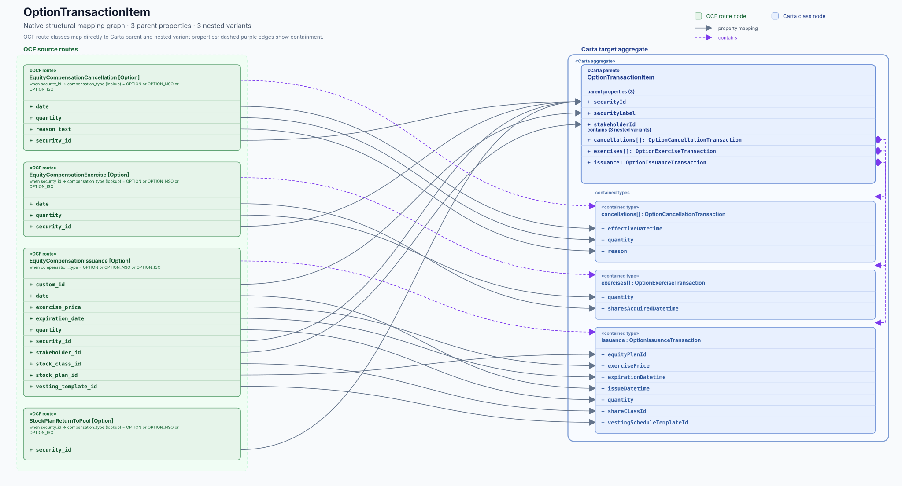

Carta target definition
OptionTransactionItem
#/$defs/OptionTransactionItem
{kind=link}

Target evidence
Who can fill this target?
EquityCompensationCancellationOption · security_id · OCF type: string
Open mapping issue ↗EquityCompensationExerciseOption · security_id · OCF type: string
Open mapping issue ↗EquityCompensationIssuanceOption · stakeholder_id · OCF type: string
Open mapping issue ↗StockPlanReturnToPoolOption · security_id · OCF type: string
Open mapping issue ↗Property ledger
Slot by slot
Schema types are shown for both sides of each mapping slot.
| Carta property / type | Status | OCF evidence / type | |
|---|---|---|---|
| cancellationsCarta type array<OptionCancellationTransaction> | structural | EquityCompensationCancellationOCF type EquityCompensationCancellation | Issue ↗ |
| exercisesCarta type array<OptionExerciseTransaction> | structural | EquityCompensationExerciseOCF type EquityCompensationExercise | Issue ↗ |
| issuanceCarta type OptionIssuanceTransaction | structural | EquityCompensationIssuanceOCF type EquityCompensationIssuance | Issue ↗ |
| securityIdCarta type string | direct | EquityCompensationCancellation.security_idOCF type stringEquityCompensationExercise.security_idOCF type stringEquityCompensationIssuance.security_idOCF type stringStockPlanReturnToPool.security_idOCF type string | Issue ↗ |
| securityLabelCarta type string | direct | EquityCompensationIssuance.custom_idOCF type string | Issue ↗ |
| stakeholderIdCarta type string | direct | EquityCompensationIssuance.stakeholder_idOCF type string | Issue ↗ |